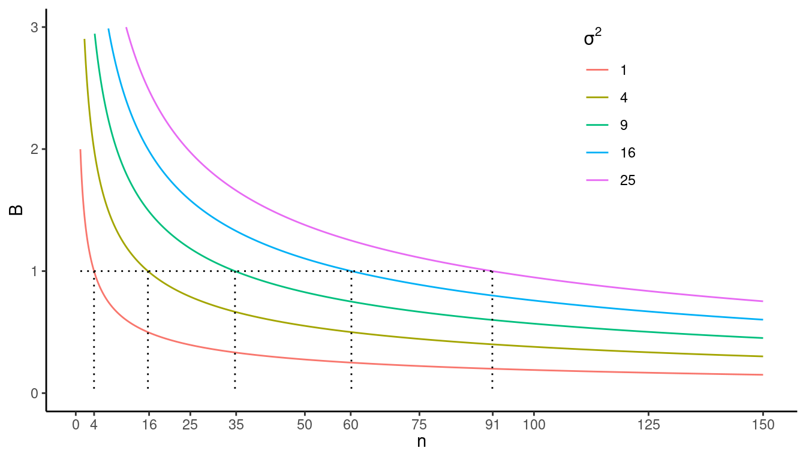
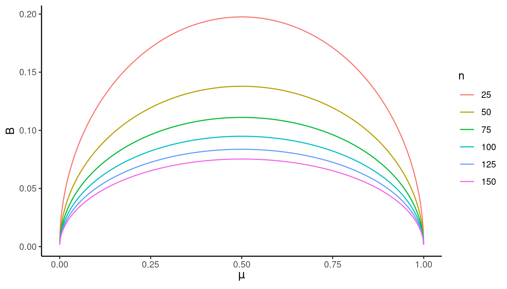

You can also download a PDF copy of this lecture.
Recall that when estimating \(\mu\) with \(\bar{y}\) under simple random sampling we have that \[ V(\bar{y}) = \left(1-\frac{n}{N}\right)\frac{\sigma^2}{n}. \] and that the bound on the error of estimation is \[ B = 2\sqrt{V(\bar{y})} = 2\sqrt{\left(1-\frac{n}{N}\right)\frac{\sigma^2}{n}}. \] The known relationship between \(B\) and \(n\) can be used to select a \(n\) for a desired \(B\).
Example: What \(n\) would yield \(B\) = 1 if \(N\) = 1000 and \(\sigma^2\) = 1, 4, 9, 16, or 25 when using a simple random sampling design?  More generally, we have the approximate relationship \[ n \approx \frac{4N\sigma^2}{B^2N + 4\sigma^2}. \] Example: What sample size would yield \(B \approx\) 1 if \(N\) = 1000 and \(\sigma^2\) = 25?
Similarly if we are estimating \(\tau\) with \(\hat\tau = N\bar{y}\) then under simple random sampling we have that \[ B = 2\sqrt{N^2\left(1-\frac{n}{N}\right)\frac{\sigma^2}{n}} \Leftrightarrow n \approx \frac{4N\sigma^2}{B^2/N + 4\sigma^2}. \] Example: What sample size would yield \(B \approx\) 100 if \(N\) = 1000 and \(\sigma^2\) = 25?
What is the impact of \(B\) and \(\sigma^2\) on \(n\)?
How do we specify \(\sigma^2\) when selecting \(n\)?
Expert judgment.
Pilot survey of the same population.
Previous survey of a similar population.
Statistical relationships involving \(\sigma^2\).
If the distribution of the target variable in the population is approximately normal/bell-shaped, then \(\sigma \approx\) range/4 or \(\sigma \approx\) range/6. The range is the distance between the largest and smallest values of the target variable (ignoring outliers).
If the distribution of the target variable in the population is right-skewed then often \(\sigma^2\) is approximately proportional to \(\mu\), or proportional to a power of \(\mu\) (so larger \(\mu\)’s imply larger \(\sigma^2\)’s).
If the target variable is an indicator variable so that \(\mu\) is the proportion of elements in the population that are in a category, then we have that \[ \sigma^2 = \frac{N}{N-1}\mu(1-\mu). \] This reaches its maximum when \(\mu\) = 0.5 so \[ \sigma^2 \le 0.25N/(N-1) \approx 0.25 \] for all \(\mu\). Thus the bound on the error of estimation is at its maximum when \(\mu\) = 0.5 as shown below.  This suggests a strategy for computing an upper bound on \(n\) by using \(\sigma^2\) \(\approx\) 0.25 when the target variable is categorical if we do not have a good guess of \(\mu\).
Example: Recall the survey using a simple random sampling design to estimate the proportion of students at a university of 20000 that own an Android mobile phone. If we wanted to estimate \(\mu\) (the proportion of students at the university that own an Android mobile phone) with a bound on the error of estimation of \(B\) = 0.01, what sample size would be needed if (a) we used a prior survey that estimated that \(\mu\) is 0.4 and (b) if we wanted to use an upper bound on \(n\)?
We have a population of \(N\) units/elements. The mean (\(\mu\)), total (\(\tau\)), and variance (\(\sigma^2\)) of the target variable for these \(N\) units/elements are defined as \[ \mu = \frac{1}{N}\sum_{i=1}^N y_i, \ \tau = \sum_{i=1}^N y_i, \ \sigma^2 = \frac{1}{N-1}\sum_{i=1}^N (y_i-\mu)^2. \]
We select a sample of \(n\) units/elements using a simple random sampling design. The mean (\(\bar{y}\)) and variance (\(s^2\)) of the target variable for these \(n\) units/elements are defined as \[ \bar{y} = \frac{1}{n} \sum_{i \in \mathcal{S}} y_i, \ s^2 = \frac{1}{n-1}\sum_{i \in \mathcal{S}} (y_i - \bar{y})^2. \]
An estimator of \(\mu\) is \(\bar{y} = \frac{1}{n}\sum_{i \in \mathcal{S}} y_i\). An estimator of \(\tau\) is \[ \hat\tau = \frac{N}{n}\sum_{i \in \mathcal{S}} y_i, \] which can also be written as \(\hat\tau = N\bar{y}\). We can also use \(s^2\) as an estimator of \(\sigma^2\) if necessary.
Based on the sampling distribution of an estimator we can find its mean and variance, and several other useful quantities like the standard error and the bound on the error of estimation.
The estimator \(\bar{y}\) has a mean of \(\mu\) and a variance of \[ V(\bar{y}) = \left(1-\frac{n}{N}\right)\frac{\sigma^2}{n}. \] The standard error of \(\bar{y}\) is its standard deviation and so simply the square root of the variance so that \[ \sqrt{V(\bar{y})} = \sqrt{\left(1-\frac{n}{N}\right)\frac{\sigma^2}{n}}. \] The bound on the error of estimation of using \(\bar{y}\) to estimate \(\mu\) is twice the standard error of \(\bar{y}\) so that \[ B = 2\sqrt{V(\bar{y})} = 2\sqrt{\left(1-\frac{n}{N}\right)\frac{\sigma^2}{n}}. \] The confidence interval for estimating \(\mu\) using \(\bar{y}\) is \[ \bar{y} \pm 2\sqrt{\left(1-\frac{n}{N}\right)\frac{\sigma^2}{n}} \Leftrightarrow \left(\bar{y} - 2\sqrt{\left(1-\frac{n}{N}\right)\frac{\sigma^2}{n}}, \bar{y} + 2\sqrt{\left(1-\frac{n}{N}\right)\frac{\sigma^2}{n}} \right). \]
The estimator \(\hat\tau\) has a mean of \(\tau\) and a variance of \[ V(\hat\tau) = N^2\left(1-\frac{n}{N}\right)\frac{\sigma^2}{n}. \] The standard error of \(\hat\tau\) is its standard deviation and so simply the square root of the variance so that \[ \sqrt{V(\hat\tau)} = \sqrt{N^2\left(1-\frac{n}{N}\right)\frac{\sigma^2}{n}}. \] The bound on the error of estimation of using \(\hat\tau\) to estimate \(\tau\) is twice the standard error of \(\hat\tau\) so that \[ B = 2\sqrt{V(\hat\tau)} = 2\sqrt{N^2\left(1-\frac{n}{N}\right)\frac{\sigma^2}{n}}. \] The confidence interval for estimating \(\tau\) using \(\hat\tau\) is \[ \hat\tau \pm 2\sqrt{N^2\left(1-\frac{n}{N}\right)\frac{\sigma^2}{n}} \Leftrightarrow \left(\hat\tau - 2\sqrt{N^2\left(1-\frac{n}{N}\right)\frac{\sigma^2}{n}}, \hat\tau + 2\sqrt{N^2\left(1-\frac{n}{N}\right)\frac{\sigma^2}{n}} \right). \] Note: The estimator of \(\tau\), its standard error, and its bound on the error of estimation are \(N\) times the corresponding quantities for \(\mu\).
Note: Sometimes we use the results of a survey to compute the estimated variance, standard error, bound on the error of estimation, or confidence interval. This is done by replacing \(\sigma^2\) with \(s^2\) in any formula using \(\sigma^2\).